Все данные в прототипе синтетические. Прототип не является медицинским изделием. Пороги сигналов и критерии маршрутизации — предложение команды до подписи клинического эксперта.
Документ рассказывает историю проекта по порядку: какая была задача, с чего мы начали, какие решения приняли, как устроен сайт внутри, как мы проверяли качество и что будет дальше. Его можно читать подряд как текст выступления.
Такие блоки — для слушателей без технического опыта: что это и зачем, без терминов.
Такие блоки — для программистов: как это сделано и где лежит в коде. Пути к файлам указаны от корня проекта, например src/core/engine.ts. Полная карта кода — в приложении А.
Такие блоки — честные ограничения прототипа. Их лучше проговорить самим, до вопросов комиссии.
Пациент с тревогой или депрессией приходит к врачу раз в несколько недель. Между визитами врач почти ничего не знает: принимает ли человек лекарство, стало ли лучше, не появились ли побочные эффекты, не стало ли опасно. А пациент остаётся один со своими вопросами: «я пропустил таблетку — что делать?», «можно ли с лекарством от простуды?».
Кейс просил сделать цифрового помощника, который свяжет их между приёмами — так, чтобы врач экономил время, а не получал ещё одну систему для заполнения.
Организаторы задали рамки: 8 функций, 10 обязательных условий и 13 метрик качества. Демонстрировать всё нужно было на клинических сценариях с препаратом «Авиандр» (маритупирдин) — это противотревожное средство, по инструкции его применяют у взрослых при генерализованном тревожном расстройстве (ГТР) и при тревожных состояниях после COVID-19.
| № | Функция | Как сделали коротко |
|---|---|---|
| 1 | Стандартизированная оценка состояния | Опросники PHQ-9, GAD-7, PHQ-4 у пациента, шкалы HAM-D, HAM-A, MADRS у врача, автоматический подсчёт |
| 2 | Рекомендации по терапии | Паспорт препарата по инструкции, проверка показаний, метка «вне инструкции — решение врача», карточки клинических рекомендаций |
| 3 | Индивидуальные риски и побочные эффекты | Правила СТОП (противопоказания) и ВНИМАНИЕ (сочетания), журнал нежелательных явлений |
| 4 | Мониторинг динамики | «Досье на 30 секунд», графики шкал, «что изменилось» |
| 5 | Самоотчёт пациента | Запись о самочувствии за минуту, отметка приёма, кнопка «Мне тяжело сейчас» |
| 6 | Каналы связи | Чат с врачом, помощник, бот-напоминания, голосовые, уведомления без медицинских данных |
| 7 | Приверженность лечению | «Принял / Пропустил / Позже», причины пропусков, индекс за 7 и 28 дней |
| 8 | Направление к психиатру | Режим «Терапевт» и маршруты ОБЯЗАТЕЛЬНО / ЖЕЛАТЕЛЬНО со сроком и критериями |
Среди условий — ключевые для медицины: две роли «врач» и «пациент» с разными правами; никаких самостоятельных клинических действий системы; только препараты, зарегистрированные в РФ, в пределах инструкции; клинические рекомендации Минздрава и валидированные шкалы с источником; сигналы о критических состояниях; соответствие законам РФ и конфиденциальность. Полная таблица соответствия есть на сайте — страница «Соответствие кейсу».
27 октября — презентация, запись экрана и код; 28 октября — предзащита и постер; 30 октября — финал: 3 минуты выступления и 5 минут вопросов.
Работа началась не с кода, а с чтения. Мы изучили PDF кейса, рабочий документ команды на 75 страниц и краткую спецификацию MVP. Из них выписали все функции, условия и метрики в одну таблицу и составили план работ — он лежит в проекте как docs/PLAN.md. Дальше приняли пять решений, которые определили всё остальное.
Спецификация предлагала два варианта: «А» — демонстрационный MVP на синтетических данных, «Б» — пилот в клинике. Мы выбрали «А», но построили его так, чтобы переход к «Б» не требовал переписывать систему: правила вынесены в данные, весь доступ к данным идёт через один слой API, каждое действие пишется в журнал, роли разделены.
На защите может не быть интернета, а проектор может стоять у чужого ноутбука. Поэтому весь «сервер» мы сделали прямо внутри браузера. Сайт можно открыть даже одним файлом с флешки — двойным щелчком.
Данные хранятся в IndexedDB браузера (зашифрованными; помещаются сотни мегабайт — фото и голосовые), вкладки синхронизируются через BroadcastChannel. Вся запись идёт через src/store/api.ts; для пилота этот файл заменяется HTTP-клиентом настоящего сервера, а интерфейс и клиническое ядро не меняются.
Противопоказания, взаимодействия, пороги сигналов и критерии направления лежат в JSON-файлах. Программа их только исполняет. Это значит, что эксперт может проверить и подписать правила, не читая код, а новый препарат добавляется новым файлом.
Компас не использует нейросети, чтобы решать что-то о лечении. Все выводы — по правилам из инструкции и клинических рекомендаций. У каждого вывода есть кнопка «Почему?»: какое правило сработало, на каких данных и откуда это правило взято. Нейросети в проекте есть только там, где они безопасны: распознать текст со скана и речь.
Вместе с первым правилом появился первый автотест. Для каждого из 7 демо-сценариев мы заранее записали, что система обязана показать, — это «эталонные проверки». Они проверяются автоматически и на странице демо, и при каждом запуске тестов.
Node.js и npm, TypeScript, Vite, браузер Edge для автоматических проверок и скриншотов. Код писался вместе с ИИ-ассистентом для программирования (Claude Code): он выполнял наши задачи и замечания, а каждое изменение проверялось автотестами и просмотром экранов.
Проект рос слоями: сначала надёжное ядро и сценарии кейса, потом всё, о чём просили люди, которые его смотрели. Каждое замечание превращалось в доработку, тест и скриншот.
Сайт открывается главной страницей с выбором роли. Дальше — три рабочих места, которые обмениваются данными в реальном времени: если пациент и врач открыты в двух вкладках, запись пациента появляется у врача сразу.
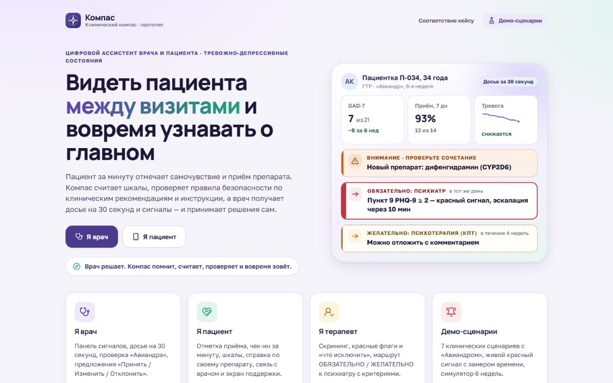
Отметить приём лекарства, за минуту записать самочувствие, пройти опросник, написать врачу или помощнику, нажать «Мне тяжело сейчас».
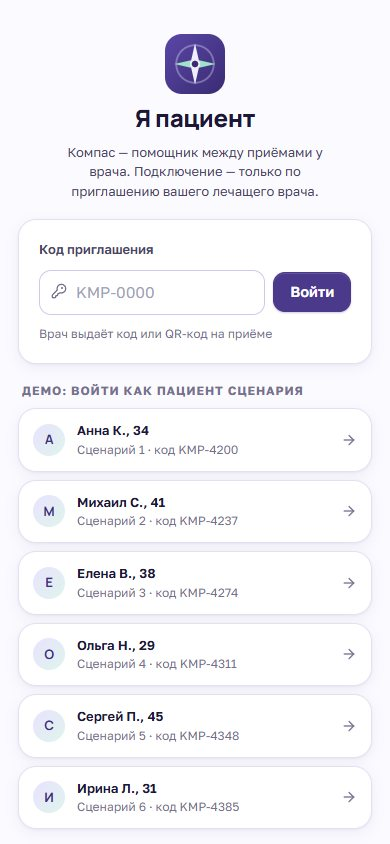
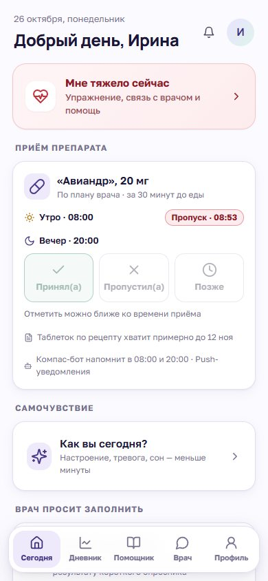
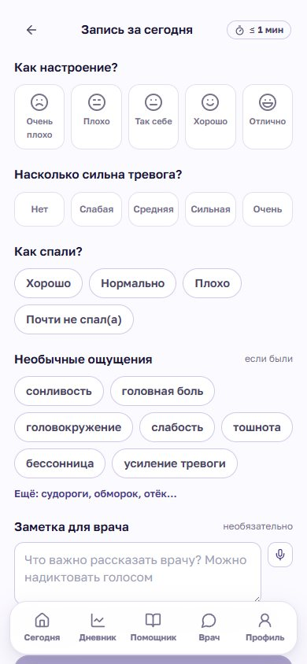
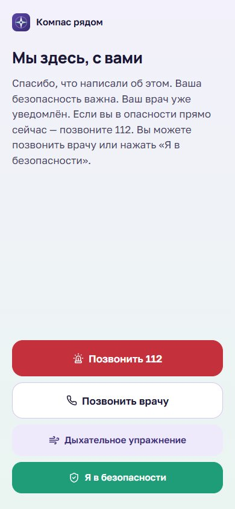
Сигналы по срочности, список пациентов, «досье на 30 секунд», терапия и безопасность, динамика, сообщения, документы, маршрутизация, журнал.
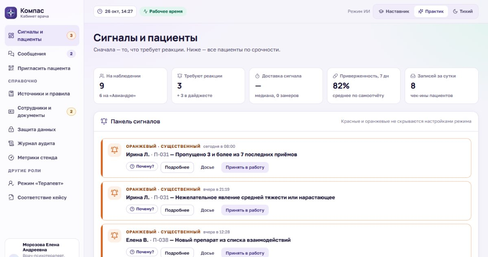
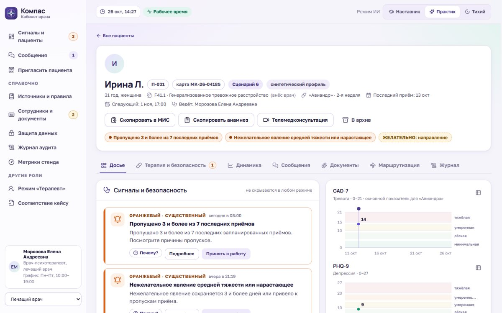
Для врача первичного звена: короткий опросник → что исключить → шкалы → красные флаги → направление к психиатру ОБЯЗАТЕЛЬНО или ЖЕЛАТЕЛЬНО, со сроком и источником.
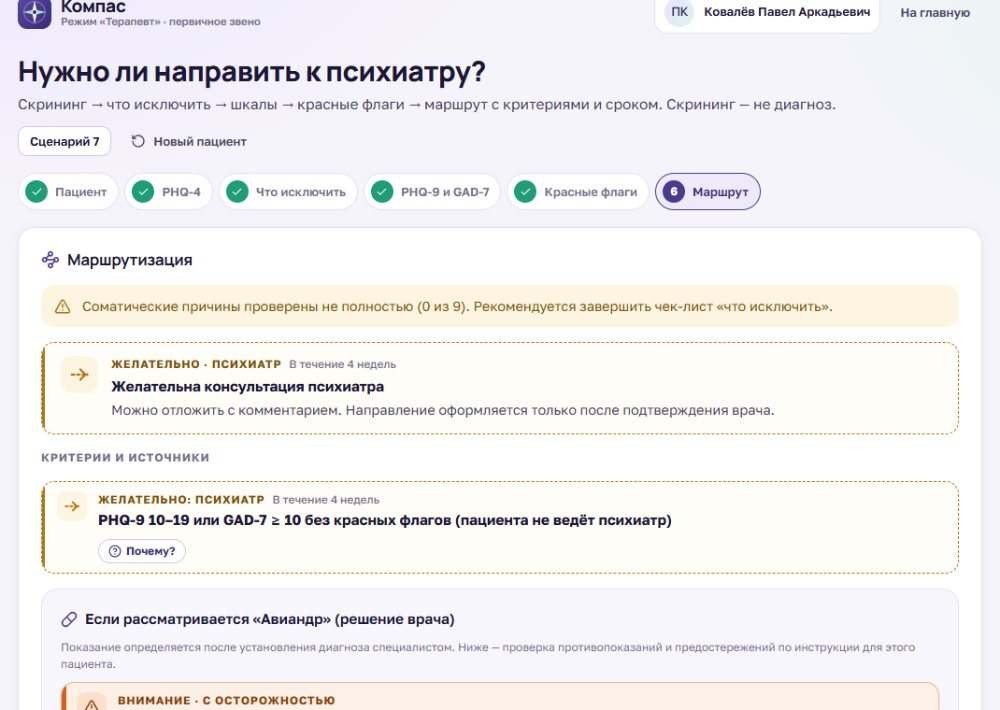
Сайт написан на языке TypeScript — это JavaScript, в котором у каждого значения есть тип, поэтому многие ошибки ловятся ещё до запуска. Интерфейс собран из «кирпичиков»-компонентов на React. Всё работает в обычном браузере на телефоне и на компьютере.
| Что | Чем сделано | Почему так |
|---|---|---|
| Язык | TypeScript 5.6, строгий режим | Типы описывают модель данных (src/core/types.ts): пациент, сигнал, правило. Ошибки видны до запуска |
| Интерфейс | React 18, компоненты в файлах .tsx (синтаксис JSX), хуки | Самая распространённая библиотека интерфейсов; легко найти разработчиков |
| Навигация | React Router 6, HashRouter (адреса #/doctor) | Работает с любого хостинга и даже из файла, без настройки сервера |
| Сборка | Vite 5, Node.js, npm | Быстрый сервер разработки; сборка сайта и офлайн-файла одной командой |
| Стили | Обычный CSS с переменными (дизайн-токены) | Никаких тяжёлых фреймворков; цвета и размеры в одном месте |
| Правила | JSON-файлы в src/data | Эксперт проверяет правила без кода; новый препарат — новый файл |
| Хранение | IndexedDB браузера + шифрование Web Crypto (AES-GCM 256); фото с телефона сжимаются при загрузке | Работает без сервера; данные на диске не читаются |
| Синхронизация | BroadcastChannel | Вкладки врача и пациента обмениваются данными мгновенно, без сети |
| Графики | Свои компоненты на SVG | Отметки визитов, начала терапии, пропусков; переключатель «график / таблица» |
| Распознавание текста | tesseract.js 6 (WebAssembly), русский и английский | Нейросеть работает в браузере — скан не уходит в интернет |
| Голос | Web Speech API (диктовка), MediaRecorder (голосовые) | Встроено в браузер, ничего устанавливать не нужно |
| Тесты | Vitest (120 тестов), Playwright с браузером Edge (27 проверок, скриншоты) | Ядро проверяется за 2 секунды, интерфейс — в настоящем браузере |
| Публикация | GitHub Pages через GitHub Actions; офлайн-файл | Тесты и сборка запускаются сами при каждой публикации |
Дополнительные библиотеки: значки lucide-react, QR-коды qrcode.react, шрифты Golos Text и Manrope (лежат локально, только кириллица и латиница), vite-plugin-singlefile для офлайн-файла. Остальное — наш код.
Внутри сайт похож на больницу с регистратурой. Экраны — это кабинеты, куда приходят люди. Все записи проходят через одну «регистратуру» — она проверяет данные, отдаёт их «клиническому ядру» на проверку по правилам и раскладывает результат по нужным кабинетам. Хранится всё в «архиве» — зашифрованном хранилище браузера.
src/store/api.ts: единственная точка записи, журналsrc/core: факты → правила из JSON → выводыsrc/store/db.ts + vault.ts: шифрование, синхронизация вкладокsendPatientMessage() в src/store/api.ts.classifyText), есть ли ответ в инструкции (answerQuestion), упомянуты ли лекарства (findMedsInText) — дифенгидрамин добавляется в список препаратов пациента.processPatient() собирает о пациенте около 50 «фактов» (buildFacts) и прогоняет правила сигналов. Срабатывает оранжевый сигнал «Новый препарат из списка взаимодействий».BroadcastChannel.Транзакция записи. Любое изменение проходит через mutate(): копия данных → изменение → номер ревизии +1 → обрезка журналов → сохранение и рассылка во вкладки.
// src/store/db.ts export function mutate<T>(fn: (db: DB) => T): T { const draft = structuredClone(getDB()); const res = fn(draft); draft.rev = (draft.rev ?? 0) + 1; trimLogs(draft); setDB(draft); // шифрует, сохраняет, рассылает во вкладки return res; }
Модель данных (src/core/types.ts): пациенты, согласия, шкалы, ежедневные записи, приёмы препарата, нежелательные явления, назначения и рецепты, предложения врачу, сигналы, направления, сообщения (в том числе голосовые), документы, телемедицина, «со слов пациента», лента бота, журнал аудита, уведомления, метрики, настройки.
«Таймер сервера». Раз в секунду в каждой открытой вкладке вызывается tick(): эскалация неподтверждённых сигналов и напоминания бота. Время стенда можно перематывать (standNow() учитывает сдвиг симулятора).
Роли и вход. Роль и пользователь хранятся отдельно для каждой вкладки (src/store/session.ts), поэтому в одном браузере можно держать открытыми и пациента, и врача.
Представьте инструкцию к лекарству, разобранную на пункты вида «ЕСЛИ пациентка беременна, ТО — СТОП». Каждый такой пункт записан отдельно, с номером, версией и ссылкой на источник. Программа ничего не придумывает сама: она сверяет данные пациента с этими пунктами и показывает врачу, что сработало и почему.
Вот настоящее правило из паспорта «Авиандра» (сокращено):
// src/data/packs/aviandr.json
{
"id": "AVI-IX-CYP2D6", "version": "1.0", "type": "WARN",
"title": "ПРОВЕРЬТЕ СОЧЕТАНИЕ: ингибиторы CYP2D6",
"condition": { "fact": "patient.meds", "op": "intersects",
"value": ["дифенгидрамин", "кетоконазол", "хинидин", "гидроксихлорохин"] },
"messageDoctor": "Инструкция называет ингибиторы CYP2D6 ... среди препаратов, требующих осторожности.",
"source": { "id": "S4", "section": "Взаимодействие с другими лекарственными средствами" },
"status": "approved_demo"
}
Условия можно комбинировать: «все из» (all), «любое из» (any), «не» (not). Сравнения: равно, больше, меньше, диапазон, «входит в список», «пересекается со списком», «да/нет».
// src/core/engine.ts — исполняются только утверждённые правила export function runRules(rules: Rule[], facts: Facts): RuleHit[] { const hits: RuleHit[] = []; for (const rule of rules) { if (rule.status !== 'approved_demo') continue; // черновики движок не читает const r = evaluate(rule.condition, facts); if (r.ok) hits.push({ rule, matched: r.matched }); // matched — основа кнопки «Почему?» } return hits; }
Каждое срабатывание запоминает, какие именно данные к нему привели. Кнопка «Почему?» показывает правило, его версию, эти данные и источник. Это и есть объяснимость: врач может проверить любой вывод.
| Набор | Файл | Состав |
|---|---|---|
| Паспорт препарата | packs/aviandr.json | 21 правило: 2 показания, «вне инструкции», 7 СТОП (возраст, беременность, эпилепсия, ИМАО, почки, печень, аллергия), 10 ВНИМАНИЕ (5 групп взаимодействий, «с осторожностью», алкоголь, вождение), предложение режима. Плюс 11 ответов помощника пациенту, форма выпуска, рецепт, фармакокинетика |
| Сигналы | alertRules.json | 17 правил: 6 красных, 8 оранжевых, 3 жёлтых; словарь кризисных фраз |
| Маршрутизация | routingRules.json | 15 правил: 4 «экстренно», 6 «обязательно», 5 «желательно»; красные флаги; «что исключить» |
| Шкалы | scales.json | PHQ-9, GAD-7, PHQ-4 (тексты и ключи), HAM-D, HAM-A, MADRS (градации) |
| Источники | sources.json | S1–S15: клинические рекомендации, инструкция из ГРЛС, шкалы, законы, справочник, приказ о рецептах; статус проверки каждого |
Перед проверкой правил ядро собирает «факты» — плоский список значений: последний балл PHQ-9 и его пункт 9, рост за 2 недели, приверженность за 7 и 28 дней, пропуски подряд, бессонница подряд, текущие препараты, факторы риска, последнее сообщение с кризисной фразой и т. д. — около 50 ключей (src/core/facts.ts). Правила работают только с фактами, поэтому их легко тестировать.
src/core/scales.ts).src/core/adherence.ts).Пороги сигналов и критерии направления — предложение команды из рабочего документа. В интерфейсе они так и помечены: «требует подписи клинического эксперта». Паспорт препарата составлен по листку-вкладышу; его нужно сверить с актуальной инструкцией в ГРЛС.
Самое важное в проекте — не пропустить опасную ситуацию и при этом не завалить врача уведомлениями. Поэтому сигналы бывают трёх уровней, и каждый ведёт себя по-своему.
| Уровень | Примеры | Что происходит |
|---|---|---|
| Красный | Пункт 9 PHQ-9 ≥ 2, кризисная фраза, «я не в безопасности», передозировка, судороги или обморок | Пациенту — безопасный экран с 112 и кнопкой «Я в безопасности»; врачу — экран, push, SMS и письмо; чек-лист действий; если врач не подтвердил за 10 минут — дежурному врачу, за 30 — заведующей |
| Оранжевый | PHQ-9 ≥ 20, рост на 5 баллов, 3 пропуска подряд, новый препарат из списка взаимодействий, бессонница 3 ночи | Панель врача и push; вне рабочего времени уведомление откладывается до начала смены; если сутки без реакции — повтор |
| Жёлтый | GAD-7 мало снизился к 4-й неделе, нет записей 3 дня, конец курса | Ежедневный дайджест и карточка пациента |
Без дублей. У правила есть «якорь» — конкретное событие (например, id опросника). Одно событие не создаёт два сигнала; открытый сигнал не дублируется; закрытый без якоря не повторяется сутки (processPatient() в src/store/api.ts).
Эскалация — в tick(): 10 и 30 минут; в демо-режиме время ускорено (1 секунда = 1 минута), чтобы показать её на защите. Время доставки сигнала между вкладками замеряется (markDelivered) и попадает в «Метрики стенда».
Тексты уведомлений (NOTIFY_TEXTS) не содержат ни диагноза, ни препарата: «Компас: требуется ваше внимание в приложении». Автопроверка ищет в уведомлениях запретные слова (src/core/privacy.ts).
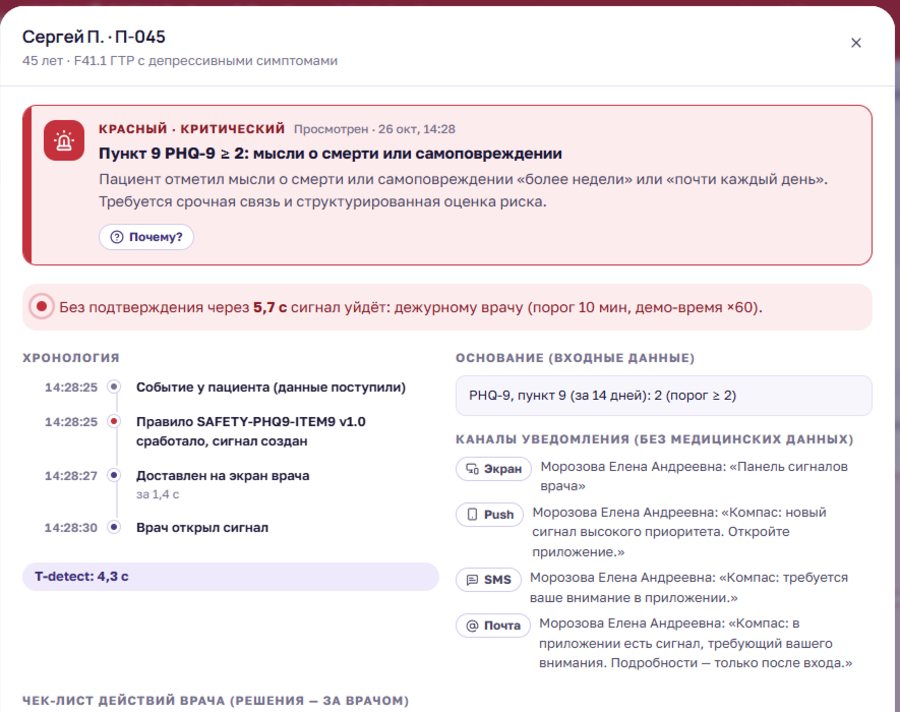
Отдельный набор правил решает, нужно ли направление к психиатру: экстренно (суицидальные намерения, психоз), обязательно (сплошная рамка) или желательно (пунктирная рамка) — со сроком и источником. Форма рамки нужна, чтобы различие было видно даже в чёрно-белой печати. Направление подтверждает только врач.
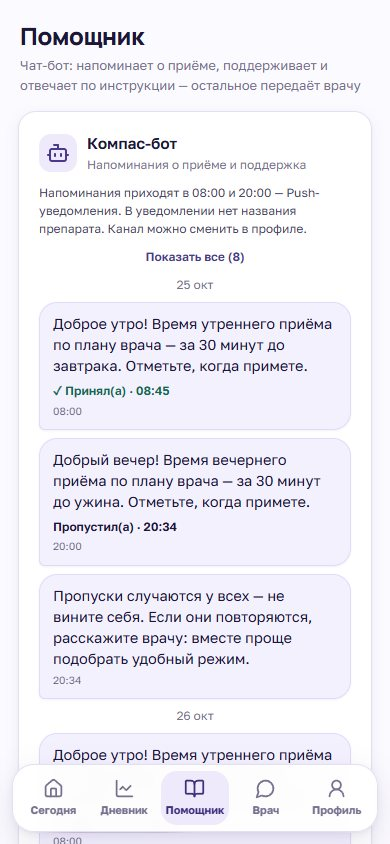
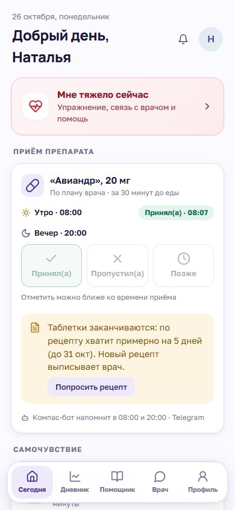
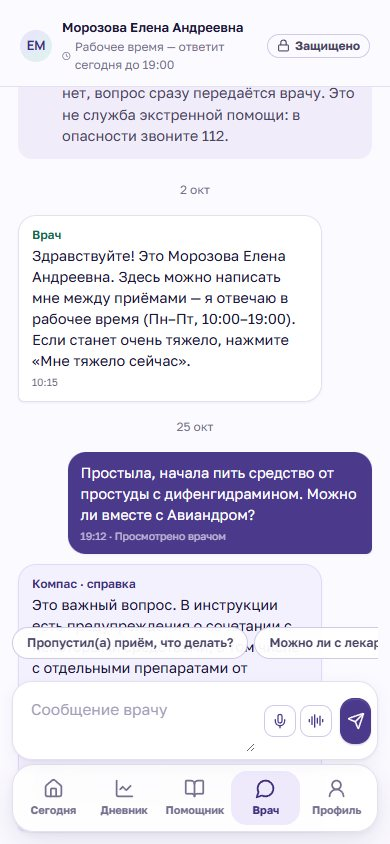
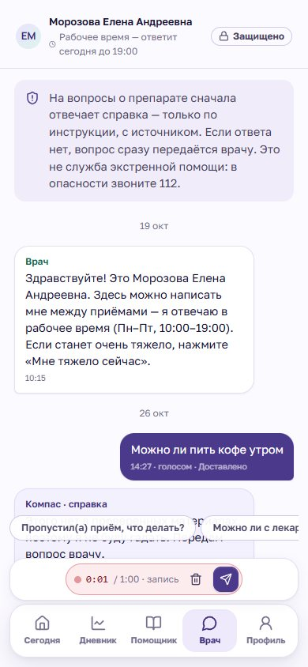
Бот присылает напоминание в 08:00 и 20:00 туда, куда выбрал пациент: push, SMS, почта, MAX или Telegram. В уведомлении нет названия лекарства. Ответить можно одним нажатием: «Принял», «Позже» (напомнит через 30 минут) или «Пропустил» (спросит почему). Ещё бот поддерживает: хвалит за неделю без пропусков, не упрекает за пропуск, после трудного дня предлагает дыхательное упражнение. Если у пациента открыт красный сигнал, бот молчит — с человеком связывается врач.
Логика — чистые функции в src/core/bot.ts (dueReminders, supportAfterDose, supportAfterCheckin); отправка — runBot() в tick(); тексты — src/data/botTemplates.json (утверждает эксперт); лента — src/patient/Bot.tsx. Ответ из ленты и отметка на экране «Сегодня» закрывают одно и то же напоминание.
| Раздел | Что там | Код |
|---|---|---|
| Сигналы и пациенты | Сигналы по срочности, плитки, ближайшие приёмы с превью «к приёму», фильтры, архив, поиск по всей истории | doctor/Dashboard.tsx |
| Досье | «Что изменилось», графики, предложения на решение, «со слов пациента» (голосом), черновик досье, заметка | doctor/tabs/Dossier.tsx |
| Терапия и безопасность | Показания, СТОП, ВНИМАНИЕ, обоснование выбора, справка о препарате, решение врача, рецепт, факторы риска, препараты, совместимость, побочные явления | doctor/tabs/Therapy.tsx |
| Динамика | Графики шкал с градациями и событиями, таблица значений | doctor/tabs/Dynamics.tsx |
| Сообщения | Переписка, голосовые, карточка контекста за 7 дней, шаблоны ответов | doctor/tabs/Messages.tsx |
| Документы | Сканы и файлы, распознавание текста, печатная версия | patient/Documents.tsx |
| Маршрутизация, журнал | Направления к специалисту; все действия по пациенту | doctor/tabs/Routing.tsx, Journal.tsx |
| Кнопки в шапке | «Скопировать в МИС», «Скопировать анамнез», телемедконсультация, архив | doctor/PatientPage.tsx |
| Справочно | Источники и правила, сотрудники и документы, защита данных, журнал аудита, метрики | doctor/*Page.tsx |
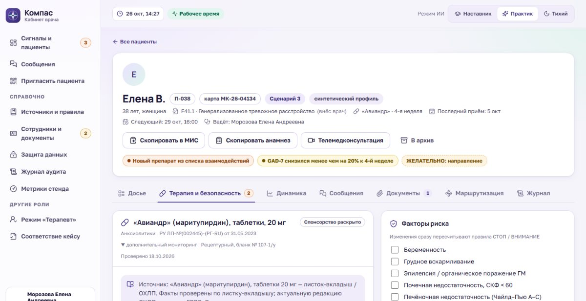
Компас может только предложить. Назначение, изменение, отмена и направление делаются кнопками врача; каждое решение пишется в журнал с подписью и временем. Если сработал СТОП, обычный путь назначения заблокирован, а применение вне инструкции оформляется отдельно — с обоснованием не короче 30 символов и подтверждением согласия пациента.
«Практик» — обычная работа; «Наставник» — для ординатора: сначала врач записывает свою гипотезу, потом видит предложения системы; «Тихий» — предложения и черновики выключены, но сигналы безопасности работают всегда.
Пациент фотографирует выписку из другой клиники. Врач нажимает «Распознать текст», и нейросеть прямо в браузере превращает фото в печатный текст примерно за 2 секунды. Сомнительные слова подчёркнуты. Компас сам находит в тексте лекарства, опасные в сочетании с «Авиандром», коды диагнозов и даты. В карточку попадает только текст, проверенный врачом.
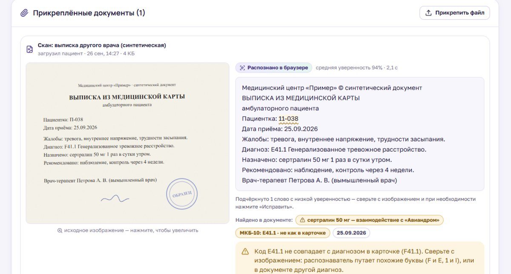
tesseract.js 6, модели русского и английского (LSTM), около 13 МБ; грузятся только по кнопке из папки ocr/ рядом с сайтом (src/ui/ocr.ts, копирует scripts/copy-ocr.mjs). Разбор текста — src/core/ocrText.ts. При проверке мы нашли, что распознаватель читает «F41.1» как «Е41.1» и при этом уверен в себе. Поэтому добавили сверку кода диагноза с карточкой: при расхождении врач видит предупреждение.
src/ui/Dictate.tsx.src/ui/VoiceRecorder.tsx.Паспорт «Авиандра» мы сверили со статьёй справочника AllMed PRO. Совпали показания, режим, противопоказания, взаимодействия и побочные действия; дописали фармакологическую группу, механизм, фармакокинетику и шаг «активированный уголь» при передозировке. Расхождение: в справочнике группа взаимодействий названа «CYP2B6», у нас — CYP2D6. Скорее всего, это опечатка справочника; пометили для сверки с ГРЛС. Срабатывание правила от названия фермента не зависит.
Рецепт для записи врача строится по образцу справочника — буква в букву:
Rp.: Tab. Maritupirdini 0,02 № 60 D.S. Внутрь, по 1 таблетке 2 раза в сутки (утром и вечером), за 30 минут до еды. (рецептурный бланк № 107-1/у)
Доза пишется в граммах (20 мг = 0,02), количество кратно упаковке, рядом — «хватит на 30 дней». Пациент видит «таблеток хватит до …» и за 5 дней до конца — кнопку «Попросить рецепт».
src/core/dose.ts (buildRecipe, gramsLatin), src/core/recipe.ts (запас), src/doctor/tabs/Recipe.tsx.
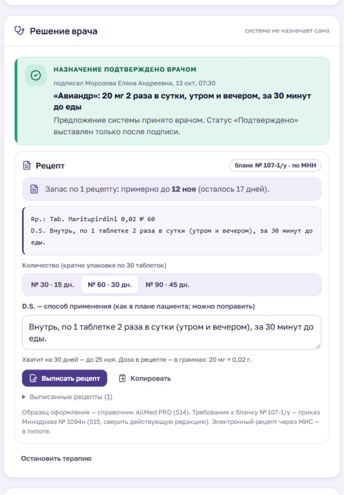
anamnesisText() в src/doctor/select.ts).src/core/compat.ts).src/doctor/Telemed.tsx).src/core/credentials.ts).Сведения о здоровье — врачебная тайна. Поэтому в Компасе три правила. Первое: всё, что хранится, зашифровано. Второе: наружу (в SMS, push, письма) уходит только нейтральный текст без диагноза и лекарства. Третье: каждое действие с данными записывается в журнал — кто, когда и что сделал.
// src/store/vault.ts (сокращено) const key = await crypto.subtle.generateKey({ name: 'AES-GCM', length: 256 }, false, ['encrypt', 'decrypt']); ... const iv = crypto.getRandomValues(new Uint8Array(12)); // новый на каждую запись const ct = await crypto.subtle.encrypt({ name: 'AES-GCM', iv }, key, gzipped); // на диск: {"v":1,"alg":"AES-GCM-256","z":"gzip","iv":"…","ct":"…"}
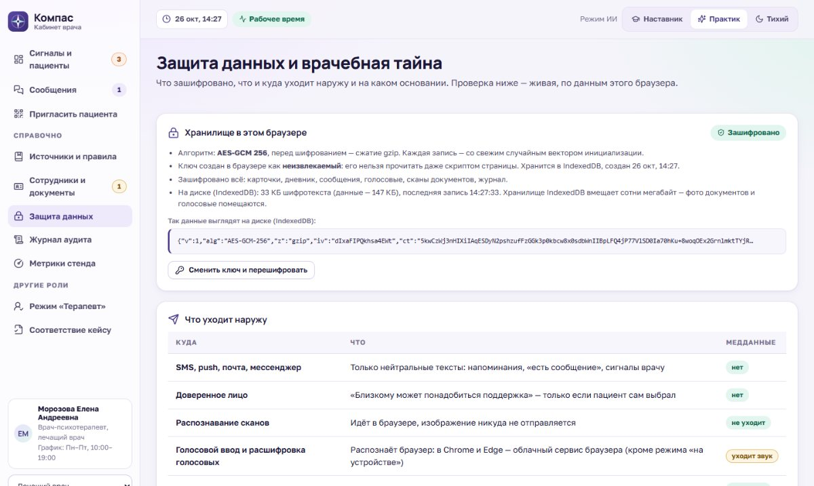
Ключ хранится в том же браузере, что и данные: шифрование защищает файл хранилища, но не браузер целиком. Голосовой ввод в Chrome и Edge распознаёт облачный сервис браузера — звук уходит в интернет. В пилоте: сервер в РФ, шифрование при передаче и хранении, ключи отдельно от данных, свой сервер распознавания речи, меры по требованиям ФСТЭК — это уточняет специалист по информационной безопасности.
Настоящих пациентов в проекте нет. Все 10 пациентов, их записи за несколько недель, сообщения, сканы выписок и даже документы врачей — синтетические, сгенерированные программой. Это позволяет показывать систему без риска для чьей-то тайны.
Генератор — src/store/seed.ts: детерминированный генератор случайных чисел (mulberry32 с фиксированным зерном), поэтому стенд каждый раз получается одинаковым. Пациенты: 7 сценарных и 3 фоновых (src/store/scenarios.ts); у каждого — траектория (улучшение, частичный ответ, ухудшение, стабильно), приёмы, ежедневные записи, шкалы, побочные явления, рецепты, история бота. Сканы выписок рисуются как SVG «бумага с печатью» (src/store/scans.ts). Сотрудники: лечащий врач, дежурный врач, заведующая, терапевт.
| № | Сценарий | Что показывает |
|---|---|---|
| 1 | Классическое ГТР | Показание совпадает; режим «предложен» до подписи врача |
| 2 | Депрессия доминирует | «Вне инструкции», препарат не предлагается автоматически |
| 3 | Сертралин + димедрол | Два ВНИМАНИЕ (антидепрессанты, CYP2D6) и оранжевый сигнал |
| 4 | Беременность | СТОП, назначение заблокировано, ОБЯЗАТЕЛЬНО — психиатр и акушер-гинеколог |
| 5 | Красный сигнал | Пункт 9 = 2 и «не вижу смысла»: безопасный экран, оповещение, эскалация |
| 6 | Пропуски и сонливость | Приверженность, причины пропусков, предложения врачу |
| 7 | Терапевт | Тревога и телесные жалобы: маршрут ЖЕЛАТЕЛЬНО / ОБЯЗАТЕЛЬНО |
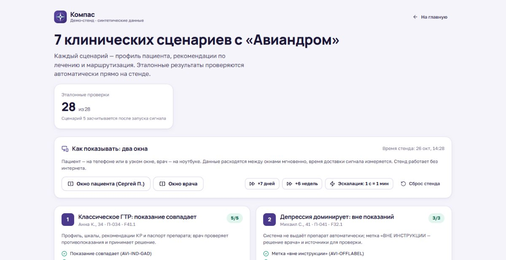
Кнопка «Демо» в углу экрана: красный сигнал сценария 5 одним нажатием, перемотка времени на +7 дней и +6 недель (система дописывает записи по траектории пациента), ускорение эскалации, сброс стенда. Для показа «пациент → врач» сайт открывают в двух вкладках.
На вопрос «откуда вы знаете, что это работает правильно?» у нас три ответа: автотесты, эталонные проверки сценариев и проверки в настоящем браузере. Все они запускаются одной командой и за секунды.
| Уровень | Сколько | Что проверяет |
|---|---|---|
| Автотесты ядра и данных | 120 | Подсчёт шкал; каждое правило — положительный, отрицательный и граничный случай; сигналы, эскалация, дедупликация; 7 сценариев; график врача; дозировки; рецепт и запас; распознанный текст; голос; бот; шифрование (расшифровка, подмена, чужой ключ); документы врачей; анамнез; совместимость; сверка паспорта со справочником |
| Эталонные проверки | 28 / 28 | Что каждый из 7 сценариев обязан показать — заранее, по документу команды (src/store/scenarioChecks.ts) |
| Проверки в браузере | 27 | Настоящий Edge с имитацией микрофона: скан → текст → поиск; диктовка; голосовые; бот; совместимость; анамнез в буфере обмена; проверка дипломов; на диске нет открытых медданных; фото с телефона 4,5 МБ → сжатие → распознавание → после перезагрузки на месте. Прогоняются и на сборке «как на GitHub Pages» (scripts/check-recognition.mjs) |
| Скриншоты | 43 | Все ключевые экраны снимаются автоматически и просматриваются глазами (scripts/shots.mjs) |
| Проверка типов | строгий режим | TypeScript не даёт собрать проект с ошибкой типов |
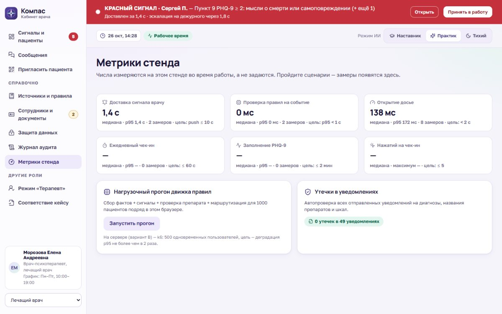
.gz → модели распознавания переименованы, их загрузка перехватывается.src/styles/tokens.css: фирменный фиолетовый #4b3a8c, мятный #1f9d78, клинические красный, оранжевый, янтарный. Мягкие фоны, чтобы интерфейс не тревожил пациента.| Вариант | Для кого | Как |
|---|---|---|
| Двойной щелчок | Показ на своём ноутбуке | Установить Node.js → start-windows.bat (или sh start-mac-linux.sh): сам ставит зависимости и открывает сайт; работает всё |
| Сайт | GitHub Pages — для всех по ссылке | Загрузить код через GitHub Desktop и включить Pages — пошагово в docs/GITHUB.md. Файл .github/workflows/pages.yml при каждой публикации сам запускает тесты, собирает и выкладывает сайт. Проверено: сборка из чистого архива проходит все 27 проверок в браузере |
| Один HTML-файл | Любой человек, защита без интернета | npm run build:offline → offline/index.html (≈1 МБ): всё внутри, открывается двойным щелчком. Распознавание сканов отключено, чтобы файл был лёгким |
| Тестовая ссылка | Показать по ссылке | npm run build:share: страница для публикации и папка моделей распознавания рядом |
| Архив исходников | Программист | Без node_modules; после распаковки — npm install и npm run dev. Проверено: ставится с нуля, тесты зелёные, сборка проходит |
Модели распознавания (около 13 МБ) не лежат в репозитории: перед dev и build скрипт scripts/copy-ocr.mjs копирует их из node_modules в public/ocr/. В офлайн-сборке значок сайта встраивается прямо в страницу.
src/store/api.ts HTTP-клиентом; сервер, например, на FastAPI или NestJS с PostgreSQL; очередь сигналов с гарантированной доставкой; шифрование при хранении и передаче.src/data/packs по образцу aviandr.json: показания, противопоказания, группы взаимодействий, правила, ответы пациенту. Ядро не меняется.Около 100 файлов: ≈14 400 строк TypeScript / TSX (вместе с тестами), ≈2 900 строк CSS, ≈1 700 строк JSON-правил.
| Файл | Что внутри |
|---|---|
src/main.tsx, App.tsx | Запуск: открыть хранилище, запустить «таймер сервера», маршруты страниц |
src/core/types.ts | Модель данных: все сущности и их поля |
src/core/engine.ts | Движок правил: условия all / any / not, сравнения, «Почему?» |
src/core/facts.ts | Факты о пациенте для правил (≈50 ключей) |
src/core/clinical.ts | Проверка терапии, сигналов и маршрутизации, чек-листы |
src/core/scales.ts, adherence.ts | Подсчёт шкал; приверженность |
src/core/text.ts | Кризисные фразы, ответы помощника, поиск лекарств в тексте |
src/core/dose.ts, recipe.ts | Дозировки в мг и г, обоснование выбора, рецепт, запас таблеток |
src/core/bot.ts | Когда напоминать и как поддержать |
src/core/compat.ts, ocrText.ts, speech.ts | Совместимость; разбор распознанного текста; склейка диктовки |
src/core/credentials.ts, privacy.ts, schedule.ts | Статусы документов врачей; проверка уведомлений; график врача и срок ответа |
src/data/*.json | Правила, шкалы, источники, тексты бота, справочник помощи |
src/store/api.ts | Все действия: записи, сообщения, сигналы, эскалация, бот, рецепты, документы, согласия, архив |
src/store/db.ts, vault.ts | Хранилище, транзакции, синхронизация вкладок; шифрование |
src/store/seed.ts, scenarios.ts, scans.ts | Синтетический стенд, 7 сценариев, «сканы» выписок |
src/store/scenarioChecks.ts | 28 эталонных проверок |
src/store/*.test.ts, src/core/core.test.ts | Автотесты (120) |
src/patient/* | Кабинет пациента: «Сегодня», запись, опросники, SOS, чат, помощник и бот, дневник, профиль, документы, «к приёму» |
src/doctor/* | Кабинет врача: панель, карточка пациента и вкладки, сигнал, сообщения, сотрудники, защита данных, источники, журнал, метрики |
src/therapist/TherapistApp.tsx | Режим «Терапевт» |
src/pages/* | Главная, демо-сценарии, соответствие кейсу |
src/ui/* | Сигналы, графики, «Почему?», окна, уведомления, диктовка, голосовые, распознавание, совместимость, демо-панель |
src/styles/* | Токены, базовые стили, компоненты, раскладка, графики, шрифты |
scripts/* | Скриншоты, проверки в браузере, тестовая копия, модели распознавания, PDF-документы |
docs/* | План и статус, скриншоты, сводка и этот рассказ |
Нужен Node.js 20 или новее. Все команды — из папки проекта.
npm install # установить зависимости npm run dev # сайт на http://localhost:5180 npm test # 120 автотестов npm run typecheck # проверка типов npm run build # сайт в dist/ (для GitHub Pages) npm run build:offline # один файл offline/index.html npm run build:share # тестовая копия по ссылке npm run shots # скриншоты экранов (нужен запущенный dev) npm run check:recognition # 27 проверок в браузере (нужен запущенный dev) npm run summary # сводка на 2 страницы в PDF npm run story # этот документ в PDF
| СППВР (CDSS) | Система поддержки принятия врачебных решений: подсказывает, но не решает |
| PHQ-9, GAD-7, PHQ-4 | Короткие опросники самооценки депрессии и тревоги; пункт 9 PHQ-9 — о мыслях о смерти |
| HAM-D, HAM-A, MADRS | Клинические шкалы, которые заполняет врач |
| ГТР | Генерализованное тревожное расстройство (код МКБ-10 F41.1) |
| Приверженность | Насколько регулярно пациент принимает препарат |
| Вне инструкции (off-label) | Применение препарата не по зарегистрированному показанию — только решение врача |
| КР, ГРЛС | Клинические рекомендации Минздрава; Государственный реестр лекарственных средств |
| CYP2D6 | Фермент печени, который перерабатывает многие лекарства; его «тормозят» некоторые препараты |
| ИДС | Информированное добровольное согласие |
| МИС, ЕГИСЗ, ФРМР | Медицинская информационная система клиники; госсистема здравоохранения; регистр медработников |
| Эскалация | Передача сигнала следующему врачу, если первый не ответил вовремя |
| AES-GCM | Стандартный алгоритм шифрования с защитой от подмены |
| TypeScript, React, Vite | Язык программирования; библиотека интерфейсов; сборщик сайта |
| Автотест | Маленькая программа, которая проверяет, что код делает ожидаемое |